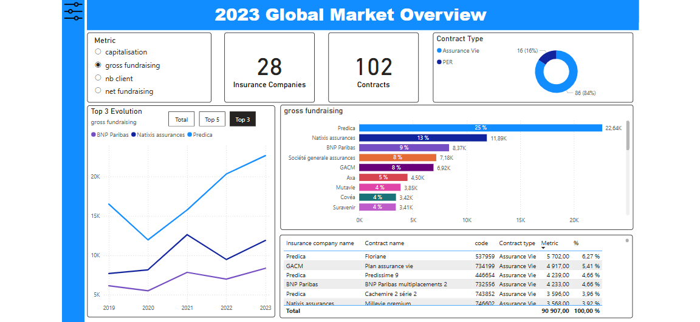
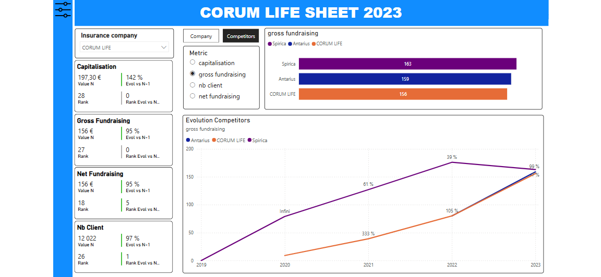
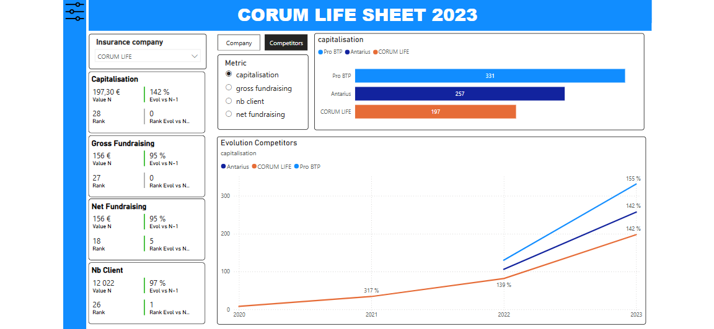

POWER BI · POWER QUERY · DAX · BUSINESS ANALYTICS
Analyse concurrentielle
du marché de l’assurance-vie
Conception d’un outil de benchmark permettant d’analyser le marché de l’assurance-vie, d’identifier ses principaux acteurs et d’étudier leur positionnement concurrentiel.
CONTEXTE
Comprendre le marché et ses acteurs
L’objectif du projet était d’exploiter des données de marché afin d’identifier les principaux assureurs et contrats, puis de déterminer quels acteurs pouvaient constituer des points de comparaison pertinents.
L’analyse a ensuite été transformée en un outil Power BI permettant d’explorer les résultats et de comparer les performances des différents acteurs du marché.
APPROCHE ANALYTIQUE
Analyser plusieurs dimensions de performance
L’étude couvre la période 2019–2023 et repose sur quatre indicateurs permettant d’analyser le poids, la dynamique commerciale et la base clients des acteurs.

BENCHMARK
Construire une comparaison pertinente
Plutôt que de définir un groupe unique de concurrents, le benchmark a été construit KPI par KPI.
Cette approche permet d’identifier les acteurs présentant des niveaux ou des trajectoires de performance comparables selon la capitalisation, la collecte ou le nombre de clients.
POWER BI
Du diagnostic au dashboard interactif
Le dashboard a été conçu de bout en bout dans Power BI afin de permettre une navigation entre une vision globale du marché et une analyse détaillée par acteur.


INSIGHTS
Principaux enseignements
L’analyse met en évidence des positionnements différents selon les indicateurs étudiés : un acteur dominant en capitalisation ne l’est pas nécessairement en collecte ou en nombre de clients.
L’analyse des évolutions entre 2019 et 2023 permet également de dépasser une simple photographie du marché pour identifier les acteurs en progression et les dynamiques concurrentielles.
COMPÉTENCES MOBILISÉES